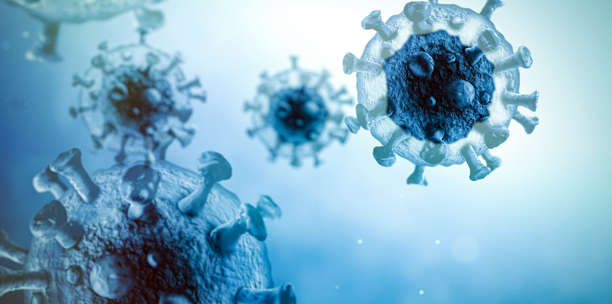

Welcome To Daily News
Get all your daily news on this website


Liverpool,Manchester United fans honour Cristiano Ronaldo
following the death of newborn son
Fans at Tuesday's Premier League match between Manchester United and Liverpool paid tribute to Cristiano Ronaldo following his announcement of his newborn son's death.After Ronaldo and partner Georgina Rodriguez announced death of their son, Manchester United confirmed late Monday night Ronaldo would miss their next match against Liverpool.After Ronaldo and partner Georgina Rodriguez announced death of their son, Manchester United confirmed late Monday night Ronaldo would miss their next match against Liverpool. "Family is more important than everything and Ronaldo is supporting his loved ones at this immensely difficult time. As such, we can confirm that he will not feature in the match against Liverpool at Anfield on Tuesday evening and we underline the family's request for privacy," the statement read. Even with Ronaldo not in attendance, fans at Liverpool's Anfield Stadium honored Ronaldo and his family, joining in a round of applause in the seventh minute, a nod to the forward's No. 7 jersey number. The applause went for the entirety of the seventh minute as some fans held up Ronaldo's jersey, and some Liverpool fans began singing "You'll Never Walk Alone," the club's unofficial anthem from the 1945 Rodgers and Hammerstein musical Carousel that was later covered by popular UK band Gerry and the Pacemakers in 1963.
Over 50? If You've Had Covid-19,
Your Risk of Getting Shingles May Be Higher

COVID-19 has been linked with a slew of unusual side effects, like COVID toes and loss of taste and smell, but new research has found having the virus can also increase your risk of developing another illness: shingles. That’s the main takeaway from a new study published in the journal Open Forum Infectious Diseases. For the study, researchers analyzed data from nearly 2 million people ages 50 and up and compared the rate of shingles (aka herpes zoster) in people who had COVID-19 to those who never had the virus. A new study has found that COVID-19 raises the risk of developing shingles. Infectious disease experts break down why this may be the case. © fotograzia - Getty Images A new study has found that COVID-19 raises the risk of developing shingles. Infectious disease experts break down why this may be the case. The researchers found that people who had COVID-19 had a 15% higher risk of shingles than those who didn’t have the virus. The risk was even higher—21%—in people who had been hospitalized with COVID-19. This, the researchers concluded, highlights “the relevance of maintaining herpes zoster vaccination.” It seems weird that you might get shingles after having COVID, but experts say it’s not shocking. Here’s what you need to know about the link. What is shingles, again? Shingles is a condition caused by the varicella zoster virus, the same virus that causes chickenpox, according to the Centers for Disease Control and Prevention (CDC). After you recover from the chickenpox, the virus stays inactive in your body. However, it can reactivate years later, causing shingles. Shingles causes a painful rash that develops on one side of the face or body. It can cause pain, itching, or tingling in the area, along with fever, headache, chills, and an upset stomach. “It can be very painful when you have shingles and can be problematic in some people afterwards as well,” says Thomas Russo, M.D., professor and chief of infectious disease at the University at Buffalo in New York. Shingles can even cause something known as post-herpetic neuralgia, he says, which is essentially lingering pain from the virus.
UN rights offices cites growing evidence
of war crimes in Ukraine
ZURICH (Reuters) - The United Nations human rights office sounded the alarm on Friday about growing evidence of war crimes in Ukraine, urging both Moscow and Kyiv to order combatants to respect international law."Russian armed forces have indiscriminately shelled and bombed populated areas, killing civilians and wrecking hospitals, schools and other civilian infrastructure, actions that may amount to war crimes," the office of U.N. High Commissioner for Human Rights (OHCHR) Michelle Bachelet said. U.N. human rights monitors in Ukraine have also documented what appeared to be the use of weapons with indiscriminate effects, causing civilian casualties, by Ukrainian armed forces in the east of the country, OHCHR said in a statement. Russia, which describes its incursion as a "special military operation" to disarm and "denazify" Ukraine, denies targeting civilians or committing any such war crimes. The OHCHR said that from the start of the war on Feb. 24 until April 20, monitors in Ukraine had verified 5,264 civilian casualties - 2,345 killed and 2,919 injured. Of these, 92.3% were recorded in government-controlled territory. Some 7.7% of casualties were recorded in the Donetsk and Luhansk regions controlled by Russian armed forces and affiliated armed groups, it added. "We know the actual numbers are going to be much higher as the horrors inflicted in areas of intense fighting, such as Mariupol, come to light, Bachelet said. "The scale of summary executions of civilians in areas previously occupied by Russian forces are also emerging. The preservation of evidence and decent treatment of mortal remains must be ensured, as well as psychological and other relief for victims and their relatives," she added. During a mission to Bucha on April 9, U.N. human rights officers documented the unlawful killing, including by summary execution, of around 50 civilians, it said. They have received more than 300 allegations of killings of civilians in the regions of Kyiv, Chernihiv, Kharkiv and Sumy, all under the control of Russian armed forces in late February and early March, it added.
45% of deferred KNUST students made payments
after directive-URO
Three days after the directive by management of the Kwame Nkrumah University of Science and Technology (KNUST) that over 6,000 students would have to defer their programmes of study for non-payment of fees, about 45 per cent of the students have made full payments. The University authorities say 22 percent of these students are local or Ghanaians while 23 per cent are foreign or international and they made personal payments. The University Relations Officer (URO), Dr. Daniel Norris Bekoe, made this revelation in an interview on 3FM’s Sunrise hosted by Alfred Ocansey on Friday, April 22. “As of [Thursday], about 22 percent of the affected students managed to pay. On international students, we had 23 percent who also managed to pay so what we were saying that the monies were with them but they refused to pay, was true.” Dr. Bekoe added: “We have said those who are indeed in need should go through a channel at the University and state why you are in need and the school will attend to them. “If a whole three months of a four-month semester and you failed to make payment of fees, not the whole payment, a percentage; then it means you are not prepared to be a student.” The URO explained that “as of yesterday, we had these numbers [45%]…some of them ran to the banks and the cash offices to pay and we know some of them are in need and we will support them”. Appeal to parents Dr. Bekoe appealed to parents to be interested in their students in schools instead of leaving them to do whatever they want on various campuses. “I am calling on parents to make a follow-up to the school and find out what their wards are doing. Some of them are using cars on campuses that they cannot take home and these are continuous students.” Dr. Bekoe noted that some students have iPhones but do not have laptops to study.


Contact us